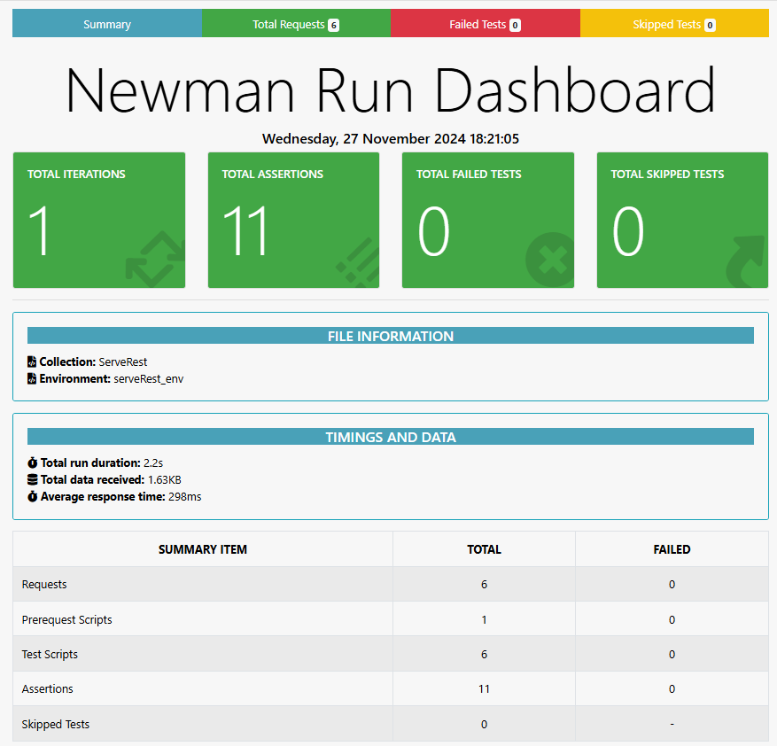
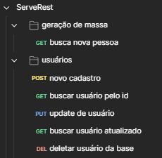
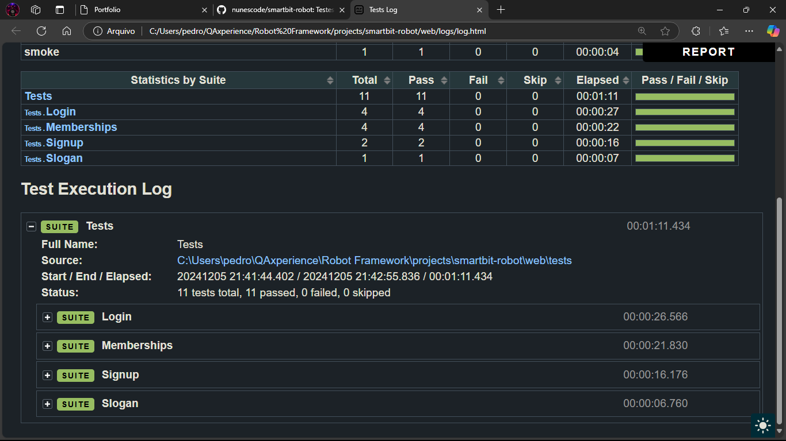

.png)
Pedro Nunes
QA Engineer | Analista de Testes | Robot Framework | Postman | Metodologias ágeis | SFPC | Python
Sobre Mim
Eu sou recém-graduado em Análise e Desenvolvimento de Sistemas e estou
dando meus primeiros passos em busca de oportunidades na área de
Testes e Qualidade de Software. Sempre fui curioso sobre como as
coisas funcionam e como garantir que tudo esteja no lugar certo,
funcionando como deveria.
Durante a faculdade, mergulhei em projetos
que me fizeram desenvolver ótimas habilidades. Fui monitor nas
disciplinas de Frontend e DevOps, ajudando colegas com dúvidas, o que
me ajudou a transmitir meu conhecimento de uma maneira didática e
ouvir e me comunicar melhor. Também tive a chance de liderar um
programa acadêmico como gerente de projetos, aprendendo a organizar
tarefas e entregas e trabalhar em equipe.
Desde então, decidi me
aprofundar ainda mais na área de QA. Estou fazendo cursos e projetos
práticos como Fundamentos de Testes, Princípios da Qualidade de
Software, Postman, Robot Framework, Cypress, JMeter, Integrações
Contínuas entre outros.
Acredito que minha dedicação, meu olhar atento
aos detalhes e minha vontade de aprender podem agregar valor às
equipes. Estou pronto para encarar novos desafios, colaborar com
pessoas incríveis e transformar problemas em soluções que fazem a
diferença na vida das pessoas!
Principais Habilidades
Certificados
Scrum Foundation Professional Certificate
Emitido por CertiProf
Robot Framework
Emitido por Fernando Papito (Udemy)
Dominando Postman
Emitido por Qualiters Club (Udemy)
Introdução ao Mercado de Qualidade de Software
Emitido por Digital Innovation One
Projetos
Postman
 Durante o Bootcamp #01 do Qualiters Club, ministrado pela Priscila Caimi, desenvolvi o projeto serveRestAPI. Nele, criei uma coleção de testes para a API ServeRest utilizando o Postman, automatizando-os com o Newman e gerando relatórios detalhados com o newman-reporter-htmlextra. Esse trabalho aprimorou minhas habilidades em testes de API e integração contínua, além de reforçar minha capacidade de documentar processos técnicos de forma clara.
Ver ProjetoRobot Framework
Durante o curso Universo Robot Framework da QAxperience, desenvolvi o projeto smartbit-robot, focado na automação de testes para aplicações web, APIs e mobile. Utilizando o Robot Framework, criei scripts que validam funcionalidades críticas, assegurando a qualidade e confiabilidade do sistema. Este projeto aprimorou minhas habilidades em automação de testes e reforçou a importância de práticas de qualidade no desenvolvimento de software.
Ver Projeto